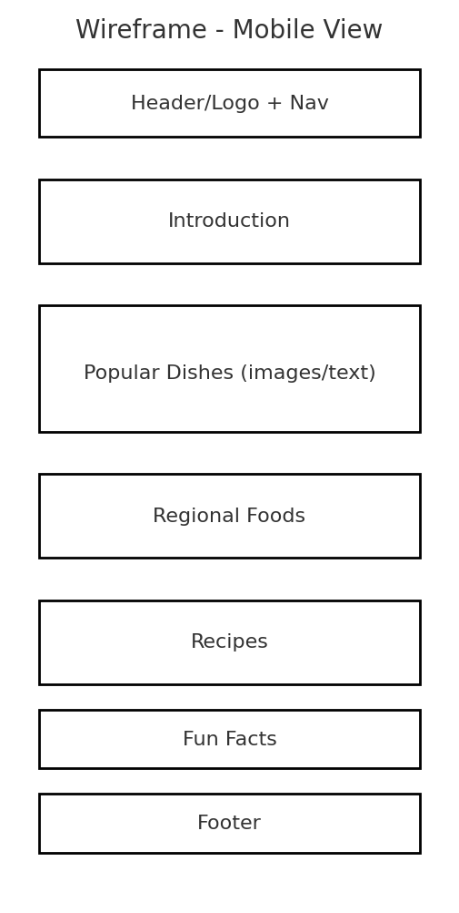
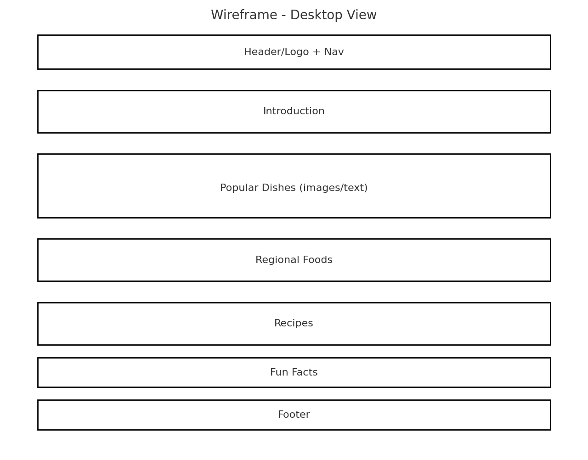

Site Name
Flavors of Ecuador
I chose this name because it is simple and communicates that the website is about the unique flavors and traditional foods of Ecuador.
Optional domain availability: flavorsofecuador.org
Site Purpose
The purpose of this site is to introduce visitors to traditional Ecuadorian food and its cultural importance. It will include descriptions of popular dishes, regional food traditions, and simple recipes so visitors can try cooking at home.
Scenarios
- What are the most popular traditional dishes in Ecuador and where do they come from?
- How can I make a simple Ecuadorian recipe at home?
- What foods are typical of the Coast, Sierra, and Amazon regions of Ecuador?
Color Schema
Selected colors:
- #006400 (Dark Green) – used for headings and accents (represents agriculture and the Andes).
- #FFD700 (Gold) – used for highlights, buttons, and background sections (represents corn and traditional food richness).
- #333333 (Dark Gray) – used for body text for readability.
Typography
Fonts to be used:
- Montserrat – for headings.
- Open Sans – for body text.
Wireframe
Mobile View:
Desktop View:
The home page will have a header with logo and navigation, an introduction section, images of dishes, and links to recipes, regional food info, and fun facts.